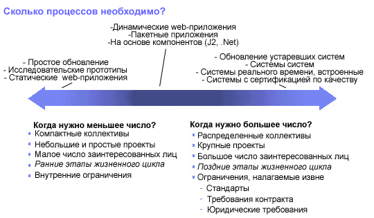

| Концепция: Адаптация процесса |
 |
|
ОбсуждениеБольшее использование артефактов, продуктов и детализированной информации, разработка и поддержка моделей, которые необходимо синхронизовать и формальных проверок - все это не обязательно хорошо. Более важно масштабирование процесса в соответствии с потребностями проекта. Вместе с ростом проекта, увеличением его распределенности, повышением технологичности, увеличением числа участников и, следовательно, увеличением необходимости придерживаться более строгих стандартов совместимости, необходимо делать процесс разработки более строгим. Однако, для меньших проектов с коллективом, работающим вместе, и известной технологией, процесс разработки должен быть более свободным. 
Факторы, влияющие на строгость процесса разработки. Порядок выполнения процесса разработки должен соответствовать этапу жизненного цикла проекта. В начальной фазе проекта при высокой степени неясности необходимо стимулировать креативность, чтобы проект отвечал запросам клиента. С развитием процесса разработки, креативность снижается, поэтому необходимо минимизировать размеры процесса разработки на ранних стадиях проекта. Позднее, напротив, необходимо внедрять больше контроля, например, страницы контроля изменений, для того чтобы избежать нежелательной креативности и связанных с ней рисков, которые часто приводят к поздним ошибкам в проекте и вынужденному продолжению разработки. Задача разработчика - непрерывно улучшать процесс разработки. Можно выполнять оценку после каждой итерации и при завершении проекта для того чтобы использовать полученные уроки для улучшения процесс разработки. Поощряйте членов команды постоянно пытаться улучшить процесс. Наконец, крайне необходимо уравновешивать планирование проекта и степень неясность проекта. Это значит, что на ранних стадиях проекта при высокой степени неясности необходимо планировать и оценивать крупные задачи, а не детали. Действия на ранних этапах должны устранять неясность проекта и постепенно увеличивать точность планирования. |
© Copyright IBM Corp. 1987, 2006. Все права защищены.. |